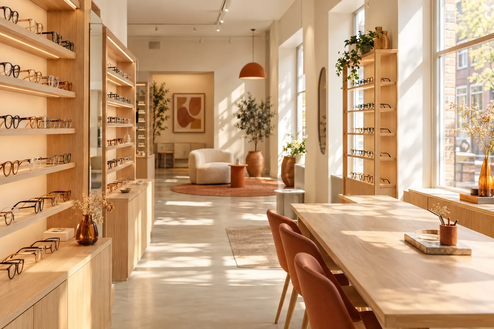
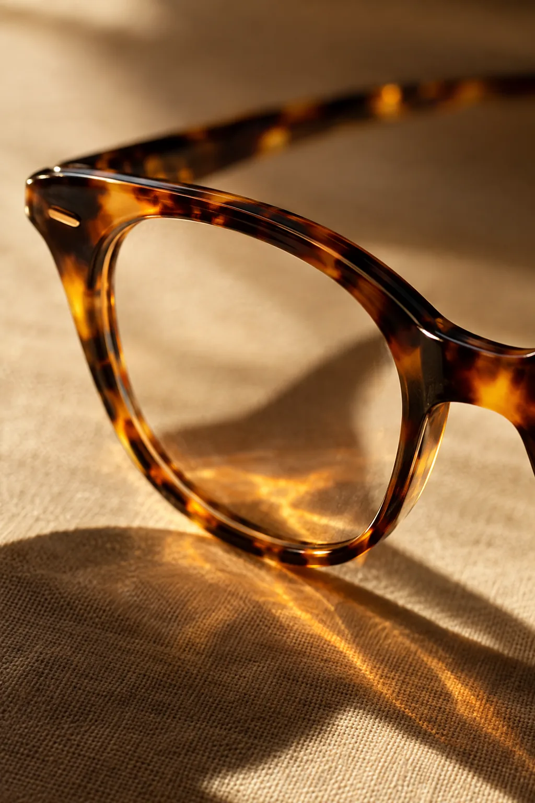
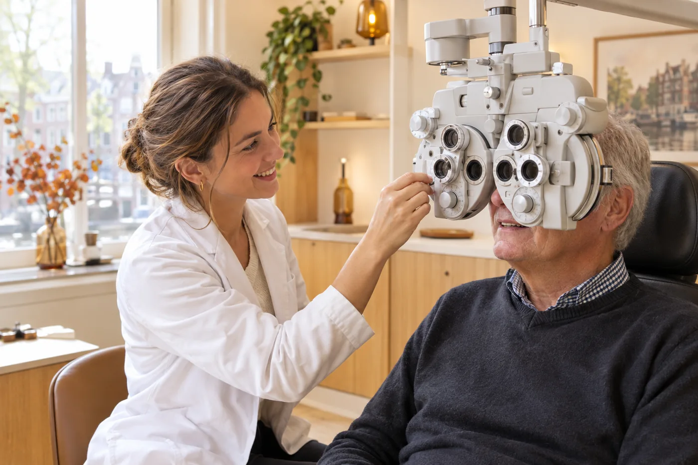

Oogonderzoek & oogtest
Grondig oogonderzoek met geavanceerde apparatuur. Wij sporen oogafwijkingen en oogziekten vroegtijdig op en beoordelen alle oogklachten zorgvuldig.
Eerstelijns oogzorg in Almere Poort — sinds 2004
Welkom bij Bon Art Optiek. Geen gewone brillenzaak, maar een allround centrum voor oogzorg en oogmode, waar opticiens en optometristen samen de tijd voor u nemen. Ook wanneer uw huisarts, oogarts of andere zorgverlener u naar ons doorverwijst.
Ons verhaal
Sinds 2004 zijn wij hét adres in Almere Poort voor oogzorg én oogmode. Wij onderzoeken en beoordelen alle oogklachten en bepalen samen met u of verder onderzoek of behandeling door de oogarts nodig is.
Bij ons werken uitsluitend experts: opticiens en optometristen met gespecialiseerde kennis van oogziekten, en klantadviseurs die bedreven zijn in het vinden van de montuur- en glasoplossing die écht bij u past. Wij leggen alles helder uit, zodat u zelf de beste keuzes kunt maken voor uw ooggezondheid. Want hoe mooi een bril ook is: de gezondheid van uw ogen staat altijd voorop.
U vindt ons aan de Duitslandstraat 85, naast de apotheek. Wij nemen graag de tijd voor u — ook buiten onze openingstijden, op afspraak.

Wat wij voor u doen
Wij bieden een breed scala aan ooggezondheidsdiensten — altijd met de tijd en aandacht die uw ogen verdienen.
Grondig oogonderzoek met geavanceerde apparatuur. Wij sporen oogafwijkingen en oogziekten vroegtijdig op en beoordelen alle oogklachten zorgvuldig.
Last van wazig zicht, hoofdpijn, vermoeide ogen of dubbelbeelden? Wij onderzoeken de oorzaak en bepalen of vervolgbehandeling door de oogarts nodig is.
Gerichte metingen voor dubbelzien en uitlijningsproblemen van de ogen. Een exacte meting is de basis van een comfortabele, correcte glascorrectie.
Wij verzorgen de nazorg en controles na een laserbehandeling, in overleg met uw behandelaar — nauwkeurig, rustig en dicht bij huis.
Aanpassing en advies over hulpmiddelen voor slechtzienden, zodat u zo lang mogelijk zelfstandig en comfortabel blijft doen wat belangrijk voor u is.
Een uitgebreid assortiment monturen, zonnebrillen, veilige en comfortabele contactlenzen en oogdruppels. Wij helpen u graag kiezen wat bij u past.
Wetenswaardig: Bon Art Optiek behoorde tot de eersten in het land die nieuwe, geavanceerde meetapparatuur inzette om oogziekten op te sporen. Die vooruitstrevende kijk op oogzorg dragen wij nog elke dag uit.

Oogmode
Een goede bril begint met een nauwkeurige meting en eindigt met een montuur dat voelt als uzelf. Onze klantadviseurs nemen de tijd: voor uw gezichtsvorm, uw levensstijl en uw budget. Zo vindt u in ons uitgebrede assortiment gegarandeerd een bril of zonnebril waar u jarenlang tevreden mee bent.
Zo werkt het
Belt, app of kom langs. Ook maandag en zaterdag zijn wij voor u open, op afspraak — en buiten reguliere openingstijden vinden wij een moment dat u schikt.
Wij luisteren eerst. Welke klachten, wensen of verwijzing neemt u mee? Zo weten we precies welk onderzoek nodig is.
Onze optometrist onderzoekt uw ogen grondig met geavanceerde apparatuur en legt alles helder uit — in gewone woorden.
Bril, lenzen, hulpmiddel of een gerichte doorverwijzing: u weet altijd waar u aan toe bent. En wij blijven beschikbaar.
Voor zorgverleners
Huisartsen, oogartsen, apotheken en andere zorgverleners in de regio wijzen hun patiënten graag de weg naar Bon Art Optiek. Dat waarderen wij enorm — en daar nemen wij de verantwoordelijkheid bij. Doorverwezen patiënten kunnen bij ons terecht voor eerstelijns oogzorg, prisma-metingen, controles na laserbehandeling en aanpassing van hulpmiddelen voor slechtzienden.
Verwijst u patiënten naar ons door? Dan houden wij u op de hoogte en stemmen wij het vervolgtraject samen af. Zo weet uw patiënt precies waar hij of zij staat — en u ook.

Wij vinden het belangrijk dat patiënten de informatie begrijpen die wij geven, zodat zij zelf de beste keuzes kunnen maken om hun ooggezondheid te behouden en te verbeteren.
— het team van Bon Art Optiek
Afspraak maken
Dinsdag t/m vrijdag bent u van harte welkom tussen 10.00 en 17.00 uur. Maandag en zaterdag zijn wij — en dat is echt iets anders dan gesloten — speciaal voor u open, op afspraak. En ook buiten deze tijden is een afspraak mogelijk. Kies zelf hoe u contact opneemt:
Bon Art Optiek Poort B.V.
Duitslandstraat 85
1363 BG Almere Poort
(naast de apotheek)
Openingstijden
| Maandag | Op afspraak voor u open |
|---|---|
| Dinsdag | 10:00 – 17:00 |
| Woensdag | 10:00 – 17:00 |
| Donderdag | 10:00 – 17:00 |
| Vrijdag | 10:00 – 17:00 |
| Zaterdag | Op afspraak voor u open |
| Zondag | Gesloten |
Buiten deze tijden is een afspraak mogelijk.
Veelgestelde vragen
Hartelijk welkom. Maak een afspraak en vermeld bij wie u bekend bent; wij stemmen waar nodig direct overleg af met uw verwijzer en bespreken uw situatie zorgvuldig met u.
Dat hangt af van uw verzekering en de reden van het onderzoek. Vraag het ons gerust bij het maken van uw afspraak: wij denken graag met u mee over de mogelijkheden.
Zeker. Maandag en zaterdag zijn wij speciaal op afspraak open, en ook op andere momenten is in overleg bijna altijd een passende tijd te vinden.
Ja. Bon Art Optiek behoorde tot de eerste opticiens in Nederland die geavanceerde oogmeetapparatuur inzette. Nauwkeurig meten is bij ons standaard — geen uitzondering.
Patiënten en klanten uit heel Almere en omstreken — van Poort tot Stad, Buiten, Hout en verder — zijn van harte welkom. U vindt ons aan de Duitslandstraat 85, naast de apotheek.